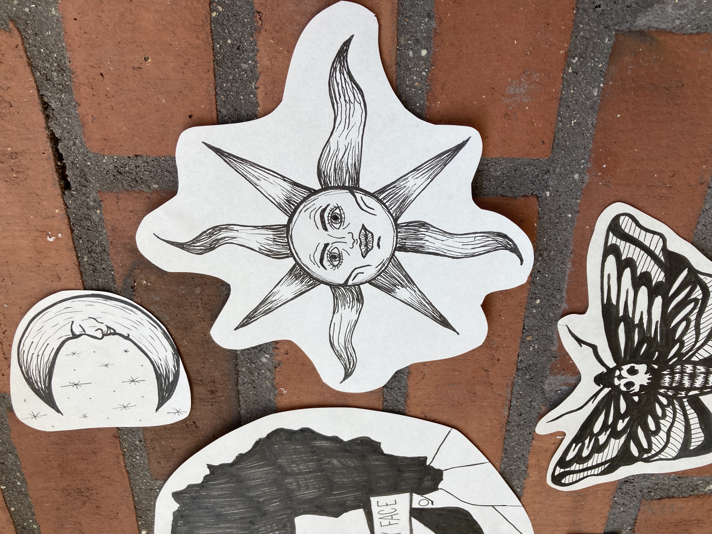
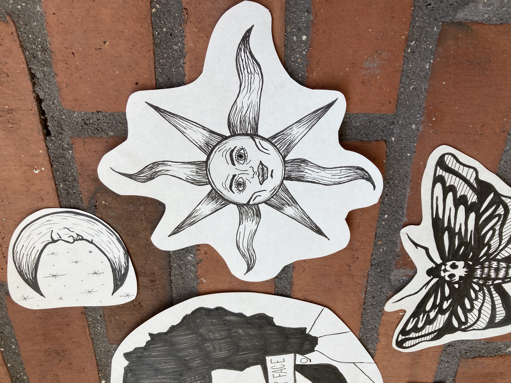

CV
Erhvervserfaring:
- Januar 2020 – August 2020
Fuldtidsansat som omsorgsmedhjælper hos Landsbyen Sølund, Hus 9
- Januar 2019 - December 2019
Ansat som handicap-hjælper på Egmont højskolen
- Januar 2018 - December 2018
Ansat som vikar hos Bosted- og Aktivitetscenter Munkehatten
- Foråret 2018
Ansat som vikar hos specialbørnehaven Platanhaven
- Juni 2017 – September 2018
Ansat som vikar på Marienlund Plejecenter
- Oktober 2016 – December 2017
Ansat som promoter hos Workshop The Retail Agency
Uddannelse:
- 2020 -
Multimediedesign-studerende på Erhvervsakademi Århus
- 2016-2017
Studerende på 2. HF på Mulernes Legatskole, Odense
- 2015-2016
Studerende på 1. HF på Nørre Nissum Seminarium og HF, Nr. Nissum
Andet:
- Januar 2019 – December 2019
Kursist, Egmont højskolen

 
